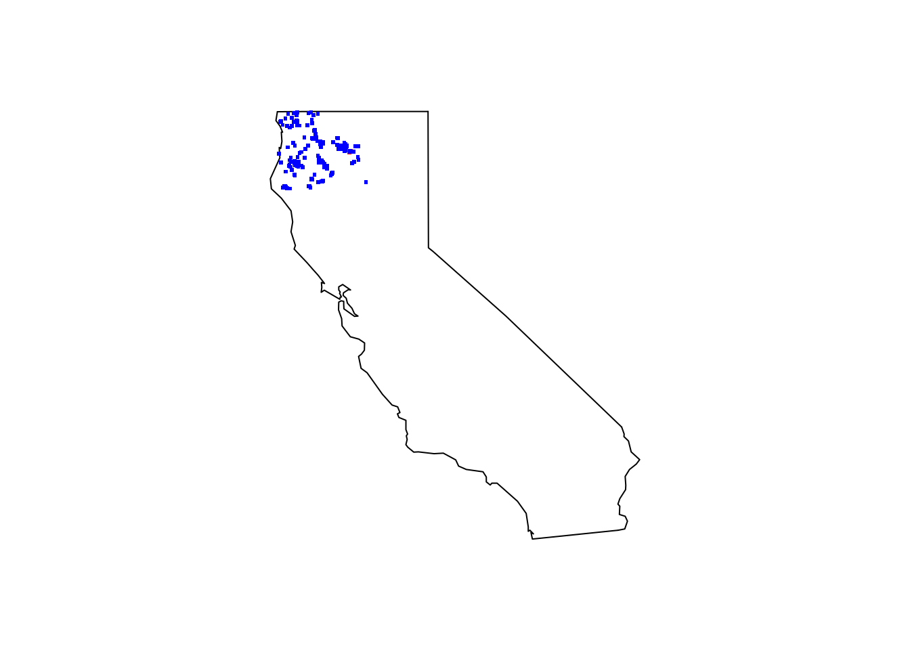
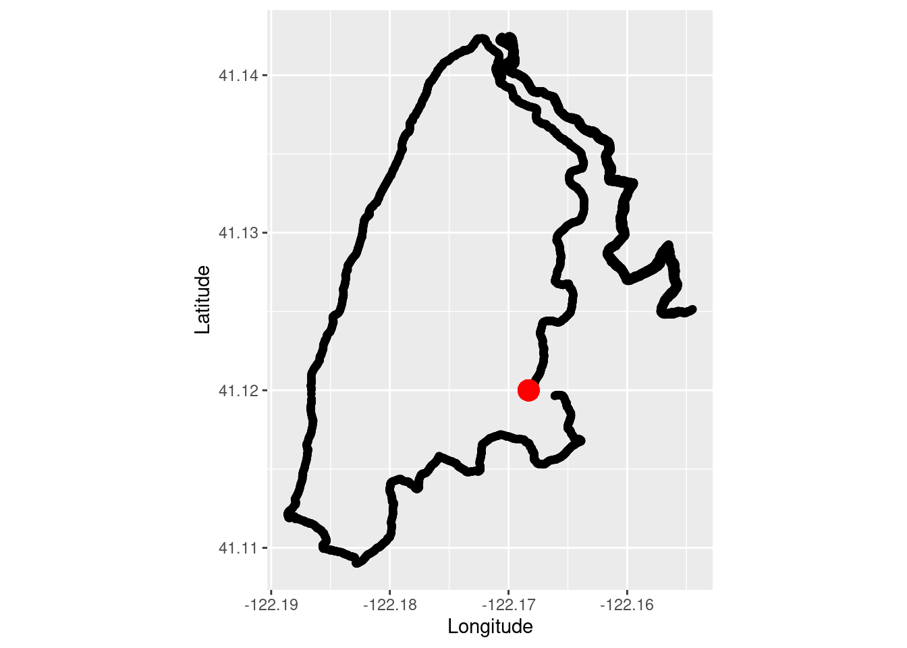

library(rinat)
library(tidyverse)

I have started checking off all the conifer species that occur in the Miracle Mile. I recently found some Pacific Yew (Taxus brevifolia) on a trail run with a friend. This was also my first post to iNaturalist. A good time to take a look at the data.
Load the libraries.
Load the data.
TrailRun1 <- read.csv("~/DATA/data/TrailRun_PacYew.csv")
glimpse(TrailRun1)Rows: 7,077
Columns: 10
$ X <int> 1, 2, 3, 4, 5, 6, 7, 8, 9, 10, 11, 12, 13, 14, 15, 16, …
$ timestamp <chr> "2022-02-27 16:41:35", "2022-02-27 16:41:43", "2022-02-…
$ position_lat <dbl> NA, NA, NA, NA, NA, NA, NA, NA, NA, NA, NA, NA, NA, NA,…
$ position_long <dbl> NA, NA, NA, NA, NA, NA, NA, NA, NA, NA, NA, NA, NA, NA,…
$ distance <int> 0, 21, 24, 28, 32, 36, 41, 41, 51, 55, 59, 64, 68, 72, …
$ altitude <dbl> NA, 791.2, 790.8, 790.6, 790.4, 790.4, 790.0, 789.6, 78…
$ cadence <int> NA, 87, 86, 85, 84, 84, 85, 87, 87, 87, 87, 85, 85, 84,…
$ speed <dbl> NA, 2.58, 2.58, 2.92, 2.92, 3.34, 3.34, 3.78, 3.78, 4.0…
$ temperature <int> NA, 25, 25, 25, 25, 25, 25, 25, 25, 25, 24, 24, 24, 24,…
$ vertical_speed <dbl> NA, -0.02, -0.04, -0.06, -0.06, -0.08, -0.10, -0.10, -0…Make a Northern California polygon for iNaturalist, pull in the data and take look.
bounds <- c(40.194, -124.4323, 42.0021, -120)
species <- c("taxus brevifolia")
pacyew_iNat <- get_inat_obs(query = species, bounds = bounds, maxresults = 1000, quality = "research")
dim(pacyew_iNat)[1] 223 37I had one of the newest observations of this species in the data set. My username is rjcmarkelz.
glimpse(pacyew_iNat)Rows: 223
Columns: 37
$ scientific_name <chr> "Taxus brevifolia", "Taxus brevifolia…
$ datetime <chr> "2023-02-18 14:18:08 -0800", "2016-06…
$ description <chr> "", "", "", "", "", "In small riparia…
$ place_guess <chr> "Shasta-Trinity National Forest, Trin…
$ latitude <dbl> 40.88129, 41.24290, 40.59970, 40.6035…
$ longitude <dbl> -122.9248, -122.0182, -123.6968, -123…
$ tag_list <chr> "", "", "", "", "", "", "", "", "", "…
$ common_name <chr> "Pacific yew", "Pacific yew", "Pacifi…
$ url <chr> "https://www.inaturalist.org/observat…
$ image_url <chr> "https://inaturalist-open-data.s3.ama…
$ user_login <chr> "cloudya", "outnabout---", "anneliese…
$ id <int> 149104203, 147115748, 144714197, 1447…
$ species_guess <chr> "Pacific yew", "Pacific yew", "Pacifi…
$ iconic_taxon_name <chr> "Plantae", "Plantae", "Plantae", "Pla…
$ taxon_id <int> 55209, 55209, 55209, 55209, 55209, 55…
$ num_identification_agreements <int> 1, 1, 1, 1, 2, 1, 2, 2, 2, 1, 2, 1, 1…
$ num_identification_disagreements <int> 0, 0, 0, 0, 0, 0, 0, 0, 0, 0, 0, 0, 0…
$ observed_on_string <chr> "2023-02-18 14:18:08-08:00", "Sat Jun…
$ observed_on <chr> "2023-02-18", "2016-06-04", "2022-05-…
$ time_observed_at <chr> "2023-02-18 22:18:08 UTC", "2016-06-0…
$ time_zone <chr> "Pacific Time (US & Canada)", "Pacifi…
$ positional_accuracy <int> 24, 5, 5, 28, 353, NA, 968, 10, 150, …
$ public_positional_accuracy <int> 24, 5, 5, 28, 353, NA, 968, 10, 150, …
$ geoprivacy <chr> "", "", "", "", "", "", "", "", "", "…
$ taxon_geoprivacy <chr> "open", "open", "open", "open", "open…
$ coordinates_obscured <chr> "false", "false", "false", "false", "…
$ positioning_method <chr> "", "", "", "", "", "gps", "", "", ""…
$ positioning_device <chr> "", "", "", "", "", "gps", "", "", ""…
$ user_id <int> 379379, 1106562, 1441336, 1441336, 14…
$ user_name <chr> "", "Mark Pollock", "Anneliese Wilson…
$ created_at <chr> "2023-02-19 04:22:43 UTC", "2023-01-2…
$ updated_at <chr> "2023-02-19 17:59:58 UTC", "2023-01-2…
$ quality_grade <chr> "research", "research", "research", "…
$ license <chr> "CC-BY-NC", "", "CC-BY-NC", "CC-BY-NC…
$ sound_url <lgl> NA, NA, NA, NA, NA, NA, NA, NA, NA, N…
$ oauth_application_id <int> 3, 3, 3, 3, NA, 2, NA, NA, 3, 3, 3, N…
$ captive_cultivated <chr> "false", "false", "false", "false", "…head(pacyew_iNat$user_login, 10) [1] "cloudya" "outnabout---" "anneliesewilson" "anneliesewilson"
[5] "anneliesewilson" "luca_hickey" "marcus_t" "marcus_t"
[9] "chrisophylla" "rsarhsu" Here is my image that I uploaded. I had a species confirmation from the community within 12 hours.

Quick map to show all the observations.
maps::map(database = "state", region = "california")
points(TrailRun1[ , c("position_long", "position_lat")], pch = ".", col = "red", cex = 3)
points(pacyew_iNat[ , c("longitude", "latitude")], pch = ".", col = "blue", cex = 3)
Make a quick plot to show the overlay of the run data and the coordinates of the image I took shown as a red dot.
tr_plot1 <- ggplot(TrailRun1, aes(x = position_long, y = position_lat)) +
coord_quickmap() + geom_point() +
ylab("Latitude") + xlab("Longitude") +
geom_point(aes(x=-122.1683, y=41.120),color="red", size = 5)
tr_plot1 